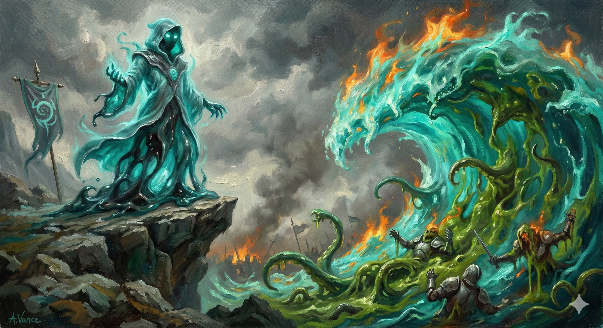

Wizards of the School of Unstable Forms dedicate their studies to the strange biology of the mimic. They learn to apply the "properties" of a mimic—adhesion, hardening, and ambush—to the very weave of magic itself.
2nd-Level Feature
6th-Level Feature
When you deal damage with a leveled spell, force a Strength save. On fail, target is Restrained until your next turn. (PB uses/rest).
10th-Level Feature
14th-Level Feature
Awaken a Concentration area spell (like Web or Cloudkill). It becomes a living creature:
— Digestive Magic: Deals 2d10 Acid damage to enemies starting turn inside.
— Moving Spell: Bonus action to move the area 20ft.